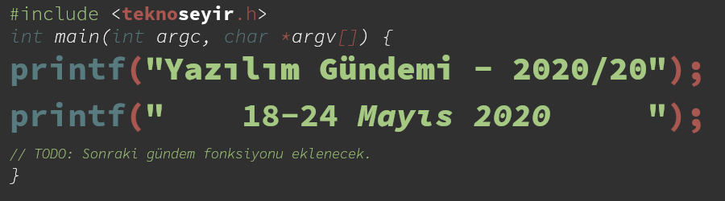
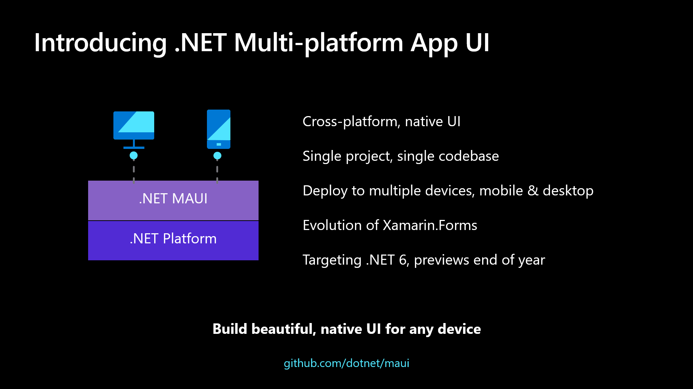
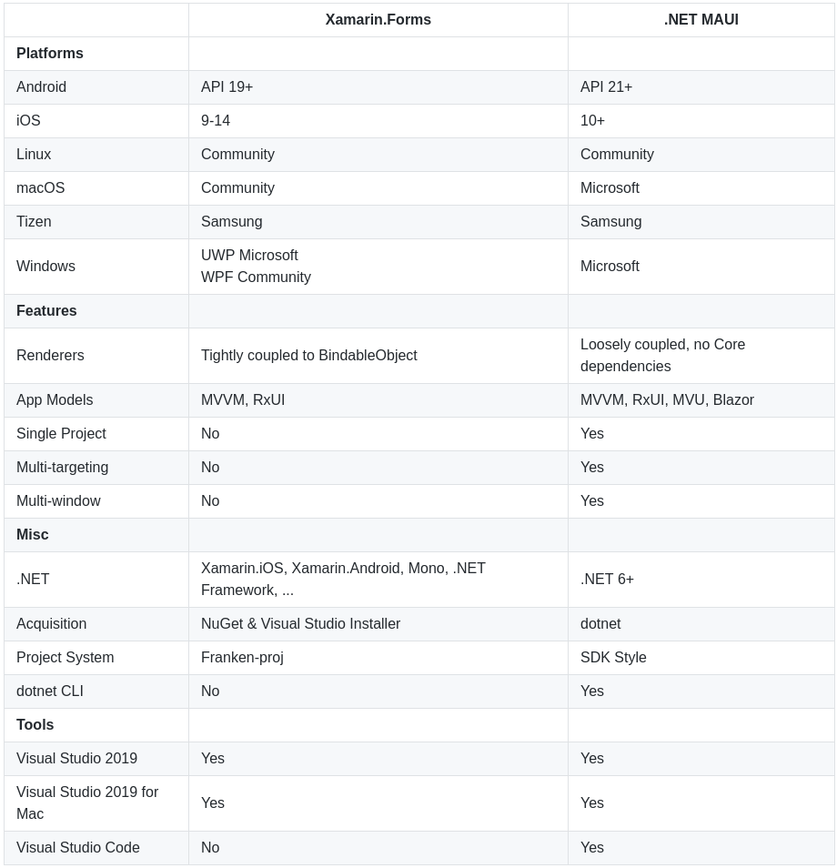
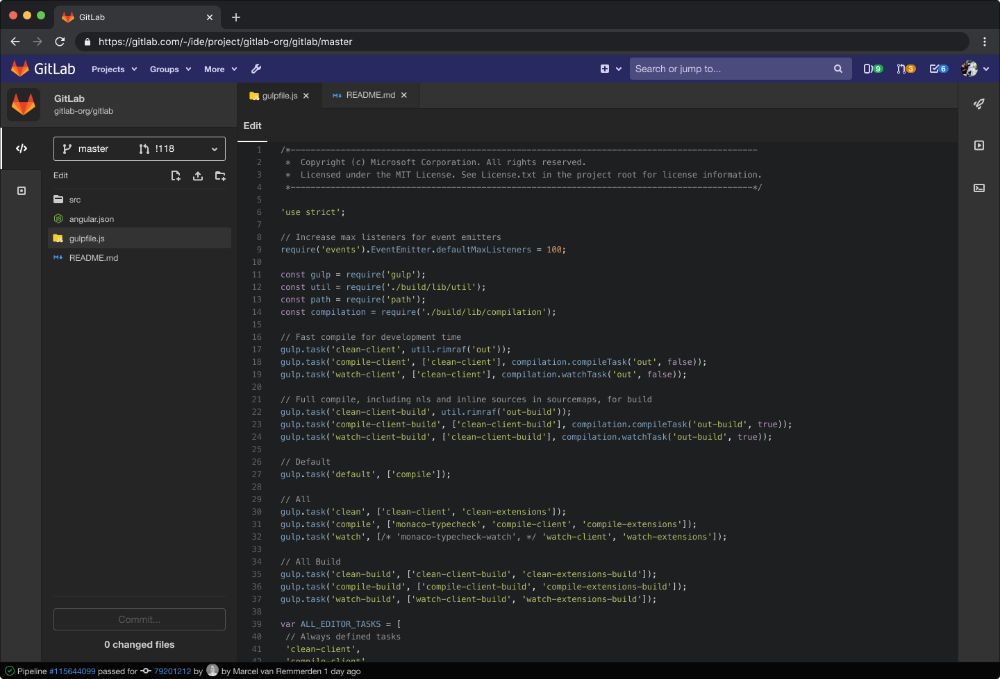
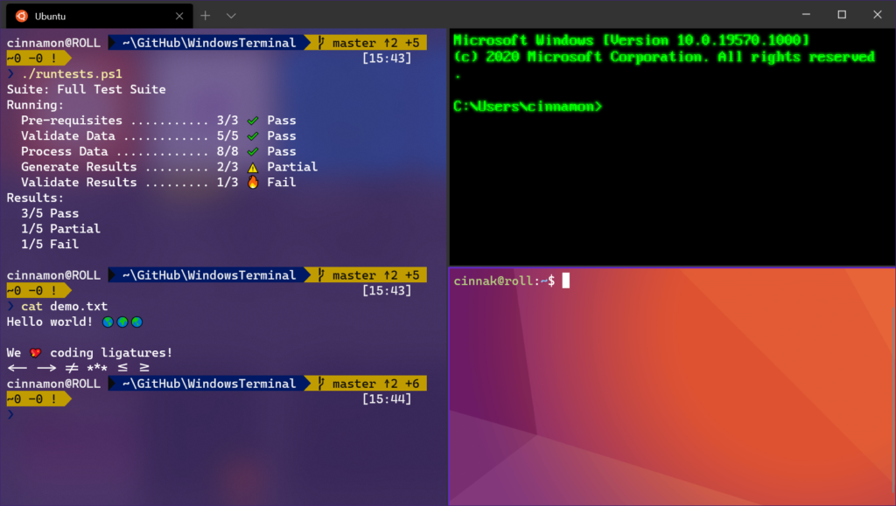
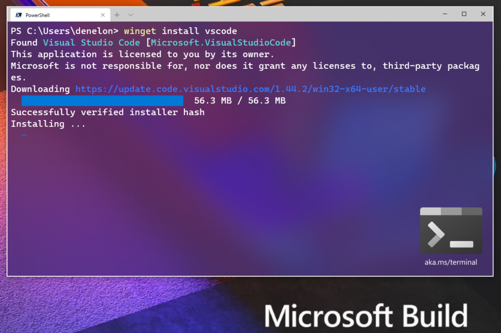

Yazılım Gündemi - 2020/20
18-24 Mayıs 2020
İçindekiler
- 1. C# 9.0 sürümü yayınlandı
- 2. Microsoft yeni platformlar arası uygulama geliştirme çözümünü tanıttı: .NET Multi-platform App UI
- 3. GitLab 13.0 sürümü yayınlandı
- 4. Docker ve Snyk firmalarından konteyner güvenliği alanında iş birliği duyurusu
- 5. Electron 9.0.0 sürümü yayınlandı
- 6. Windows Terminal 1.0 sürümü yayınlandı ve Windows Package Maganer Preview tanıtıldı
- 7. Yaklaşan Online Etkinlikler #EvdeKal
- 8. Diğer Haberler
- 9. Lisans

< Önceki Gündem | 18-24 Mayıs 2020 | Sonraki Gündem >
1 C# 9.0 sürümü yayınlandı
Microsoft'un geliştiriciler için özel olarak düzenlediği etkinliği olan BUILD bu yıl koronavirüs nedeniyle sanal olarak düzenlendi. Geçtiğimiz hafta düzenlenen BUILD 2020 etkinliğinde .NET ekosistemi altında geliştirilen programlama dili C#'ın da 9.0 numaralı sürümü yayınlandı. Her ne kadar uzun bir süredir .NET ekosisteminden uzak kalmış olsam da C# ilk göz ağrılarımdan biridir. Programlama başlarken kullandığım dillerden biri olması dolayısıyla yapısı hakkında bilgim var. Bu sürümle birlikte gelen birkaç özelliği birlikte inceleyelim:
1.1 Init-only properties
Nesne yönelimli programlama dili olmasından dolayı verileri nesne olarak temsil etme özellikleri oldukça gelişmiş olan C#'da halihazırda bu şekilde basit bir sınıf oluşturup kullanabiliyorduk:
public class Kisi { public string Ad { get; set; } public string Soyad { get; set; } } new Kisi { Ad = "Eren", Soyad = "Hatırnaz" }
Fakat bazı durumlarda bazı property'lerin tanımlandıktan sonra değiştirilememesini isteyebiliriz. İşte bu durumda imdadımıza init-only propert'ler yetişiyor ve bu şekilde bir tanımlama ile isteğimizi gerçekleştirebiliyoruz:
public class Kisi { public string Ad { get; init; } public string Soyad { get; init; } }
1.2 Records
Eğer yukarıdaki kullanımın askine birkaç property'yi değil tüm objeyi immutable yapmak istiyorsanız o zaman da yardımımıza yeni Records özelliği koşuyor:
public data class Kisi { public string Ad { get; init; } public string Soyad { get; init; } }
Tanımladığınız sınıfı public data class olarak işaretlediğinizde o artık
bir Record haline gelmiş oluyor ve artık bir kere oluşturduğunuz bir record
objesini bir daha değiştiremiyorsunuz, onun yerine artık bu şekilde var olan
objenin özelliklerini değiştirip yeni objeler oluşturarak devam ediyorsunuz:
var digerKisi = person with { Ad = "Ahmet" }
Daha önce "Ad=Eren, Soyad=Hatırnaz" olarak tanımladığımız objeyi kullanarak "Ad=Ahmet, Soyad=Hatırnaz" şeklinde yeni bir obje oluşturmuş olduk.
Immutable konusu benim de zaman zaman kafamı karıştıran bir konu, dolayısıyla bu tarz kullanımların tam olarak hangi sorun için bir çözüm olduğunu bilemiyorum ama takip ettiğim kadarıyla topluluk bu özellikler için sevinmiş durumda.
1.3 Top-level programs
Diğer birçok programlama dilinden de alışık olduğumuz üzere C#'da basit bir programın yapısı şöyle oluyor genelde:
using System; class Program { static void Main() { Console.WriteLine("Merhaba Dünya"); } }
Fakat artık daha da basit şekilde, Python ve Ruby gibi dillerden aşılık olduğumuz gibi bu şekilde de uygulamalar yazabileceğiz:
using System; Console.WriteLine("Merhaba Dünya");
C# 9.0 ile birlikte gelen diğer özellikler ve detaylar için konu başlığına eklediğim bağlantıya tıklayabilirsiniz. Ayrıca geçtiğimiz hafta içerisinde .NET 5 Preview 4 sürümü de duyuruldu.
2 Microsoft yeni platformlar arası uygulama geliştirme çözümünü tanıttı: .NET Multi-platform App UI
Microsoft'un 2016 yılında .NET için açık kaynaklı teknolojiler üreten Xamarin firmasını satın almıştı. Xamarin tarafından geliştirilen Xamarin.Forms'da doğal olarak Microsoft'a geçmiş oldu. İşte bu satın almanın yeni meyvesi olacak şey de bugün konuşacağımız .NET Multi-platform App UI oldu.

Xamarin.Forms hatırlamayan ya da bilmeyenler için .NET ekosistemi içerisinde platformlar arası (cross-platform) uygulama geliştirmeye yarayan bir teknoloji. Geçtiğimiz hafta içerisinde ise bu teknolojinin artık evrimleşip başka bir teknolojiyle birleşme vaktinin geldiğini duyuruldu. .NET MAUI, kısaca Xamarin.Forms'un evrimleşmiş ve gelişmiş halidir diyebiliriz. Microsoft, henüz erken geliştirilme aşamasında olan bu teknolojisi ile biz geliştiricilere tek bir projeden hem Windows hem macOS hem de iOS ve Android uygulaması çıkarmayı vaat ediyor.

Şekil 3: Xamarin.Forms ve .NET MAUI arasındaki farklar tablosu
.NET 6 sürümüyle birlikte hayatımıza girmesi planlanan bu teknolojiyle birlikte MVVM (Model-View-ViewModel) ve RxUI gibi Design Pattern ve uygulama modellerinin yanı sıra .NET MAUI, MVU(Model-View-Update) ve Blazor gibi yapıları da destekleyecek.
Peki bu gelişmeler Xamarin ve Xamarin.Forms için ne anlama geliyor? diye soracak olursanız ise cevabı çok zor değil. Microsoft'un birçok uygulama geliştirme teknolojisini .NET 5 ile tek çatı altında toplamak istediğini önceki yazılım gündemi yazılarının birinde belirtmiştim. İşte bu gelişmeyi de aynı bağlamda değerlendirebiliriz-ki Microsoft'da zaten planlarında bu olduğunu açıkladı. Xamarin'in ve alt teknolojilerinin yeni sürümleri bir süre daha gelmeye devam edecek fakat Microsoft'un artık yeni odağı .NET 6'nın içerisinde olacak bu teknoloji. Geliştiricilerin geçiş yapmasını kolaylaştıracak gelişmelerden sonra da Xamarin projesi büyük ihtimal durdurulur.
3 GitLab 13.0 sürümü yayınlandı
Uzak git sunucusu ve proje yönetimi hizmetleri sunan GitLab, geçtiğimiz hafta içerisinde 13.0 sürümünü duyurdu. Aynı zamanda GitLab.com'da son sürüme güncellenmiş oldu. Bu sürümle birlikte gelen bazı özellikler ise şu şekilde:
3.1 Amazon ECS'ye otomatik deploy (GitLab Auto DevOps)
Artık geliştirdiğiniz projeleri otomatik olarak AWS Elastic Container Service
tarafına gönderip, uygulamanızı ayağa kaldırabileceksiniz. Bunun için
deponuzun CI/CD ayarlarından Auto DevOps özelliğini aktifleştirmeniz ve
deponuza şu değişkenleri tanımlamanız gerekiyor: AWS_ACCESS_KEY_ID,
AWS_ACCOUNT_ID ve AWS_REGION. Nasıl çalıştığını görmek için şuradaki kısa
demo videosunu izleyebilirsiniz
3.2 Versioned Snippets
GitLab'in Snippet olarak isimlendirdiği şeyi biz aslında GitHub'daki Gist ile biliyoruz. İkisi de aynı amaca hizmet ediyorlar. Tek başına deposu (repository) olması gerektirmeyen betikleri ya da kodları paylaşmak için kullandığımız bir hizmet. Ülkemizde hala daha yasaklı olan pastebin.com gibi yani. İşte GitLab'daki bu snippet sistemine yeni bir özellik geldi, artık bunları da git ile bilgisayarımıza clone edip, değişiklik yapıp ve commit'leyip onu gitlab'a gönderebileceğiz. Böylece hem versiyonlanmış olacak hem de kendi bilgisayarımızda dosyayı düzenleyebileceğiz. Fakat web arayüzünde henüz snippet geçmişini gösteren bir özellik yok, ileride eklenir diye umuyorum. Benim örneğimi bu şekilde clone edip, geçmişe bakabilirsiniz.
git clone https://gitlab.com/snippets/1980000.git
3.3 Web IDE için karanlık tema

Şekil 4: Tarayıcı üzerinden kod yazmaya olanak sağlayan GitLab Web IDE'de artık karanlık tema mevcut.
GitLab 13.0 ile gelen diğer özellikler için konu başlığına eklediğim bağlantıya tıklayabilirsiniz.
4 Docker ve Snyk firmalarından konteyner güvenliği alanında iş birliği duyurusu
Linux içerisindeki cgroups ile birlikte gelen konteyner sistemini
popülerleştirmesiyle bilinen Docker firması ve yazılımın çeşitli alanlarıyla
ilgili güvenlik çözümleri sunan Snyk şirketi, geçtiğimiz hafta içerisinde iş
birliği yaptıklarını duyurdular.
Bu iş birliği kapsamında Docker Hub sistemine eklenecek yeni bir entegrasyon sayesinde artık Docker Hub'a gönderdiğimiz konteyner imajlarına otomatik olarak güvenlik taraması yaptırabilir ve raporlayabilir olacağız.
Container teknolojisinin artan popülaritesi ile birlikte güvenlik ihtiyaçlarının da aynı oranda artacağı tahmin edilebilir bir durum. Snyk firması da bu alana erkenden giren firmalardan birisi olmuş.
Bu iş birliğinin ilk meyvelerini 2020'nin üçüncü yarısında görmeye başlayacağız. Container teknolojisi ile ilgili arkadaşlara "Container Security" alanına bakmalarını tavsiye ederim.
5 Electron 9.0.0 sürümü yayınlandı
JavaScript kullanarak platformlar arası masaüstü uygulama geliştirmeye yarayan kütüphane Electron, geçtiğimiz hafta içerisinde 9.0.0 etiketli sürümünü yayınladı. Bu sürümle birlikte gelen bazı yenilik ve değişiklikler ise şöyle:
- Chromium sürümü 83.0.4103.64 olarak yükseltildi.
- Chrome 81 sürüm notları
- Chrome 82 sürümü koronavirüs nedeniyle atlandı.
- Chrome 83 sürüm notları
- Node.js sürümü 12.14.1 olarak yükseltildi. Sürüm Notları
- V8 sürümü 8.3 olarak yükseltildi.
- İmla kontrolü özelliğinde iyileştirmeler: #22128 ve #22368
- Linux üzerinde Window Events Handler verimliliği iyileştirildi. (#23260)
- PDF görüntüleyici desteği geri geldi. (#22131)
enableRemoteModle: trueolmadanremotekullanılırsa artık deprecate uyarısı veriyor. (#21546)app.enableRendererProcessReuseözelliği artık artık varsayılan olaraktrue. (#22336)- JavaScript olmayan objeleri IPC üzerinden gönderirken artık exception fırlatıyor. (#21560)
Bu sürümle gelen diğer yenilik ve değişiklikler için konu başlığına eklediğim bağlantıya tıklayabilirsiniz.
6 Windows Terminal 1.0 sürümü yayınlandı ve Windows Package Maganer Preview tanıtıldı
Microsoft'un GNU/Linux ve MacOS taraflarına kaybettiği geliştirici kitlesini geri kazanmak için yaptığı hamleler sürüyor. Uzun süredir geliştirilmekte olan, benim de sık sık gündemde yer verdiğim Windows'un yeni Terminal'i geçtiğimiz hafta düzenlenen BUILD 2020 etkinliğinde 1.0 olarak stabil versiyonuna kavulmuş oldu.

Şekil 5: Artık Windows üzerinde de gelişmiş bir terminal emülatörümüz mevcut.
Önceki yazılım gündemi yazılarında zaten birçok Windows Terminal sürümününde gelen yenilikleri konuşmuştuk. Bugün biraz daha önemli olduğunu düşündüğüm Windows Package Manager üzerine konuşmak istiyorum.
sudo apt install firefox
Aramızdaki çoğu kişi yukarıda yazdığım komut satırı kodunun ne iş yaptığını biliyor. Gerçi bilmeseniz bile ingilizce olarak okuduğunuzda zaten anlaşılıyor. Firefox yazılımını sisteme kuruyor. İşte bu yapının benzeri artık windows tarafında şu şekilde mevcut:

Şekil 6: winget install firefox
Henüz ön izleme sürümü yayınlanmış bu paket yöneticisi Windows için oyun
değiştirici olma rolünü üstlenebilir. Şimdilik sadece şu depodaki manifest
dosyaları üzerinden exe dosyalarını indirip, çalıştırma görevi görüyor olsa da
hash doğrulama gibi önemli özellikleri de mevcut. Bence paket yöneticilerinin
en önemli özelliği upgrade komutu ile sistemde yüklü tüm uygulamaları tek
seferde güncelleyebilmek fakat bu henüz winget'e gelmiş değil. Bu özelliğin
kesinlikle getireceklerdir. Geliştirme ortamlarını Windows üzerinde kurmuş
birçok kişiye hatta son kullanıcıların bile çok işine yarayacağını
düşünüyorum.
7 Yaklaşan Online Etkinlikler #EvdeKal
| Etkinlik İsmi | Tarihi |
|---|---|
| PostgreSQL Sohbetleri 16: Türkiye'de PostgreSQL ne durumda? (Türker Gülüm) | 26 Mayıs 13:30 |
| Kubernetes 1.18'de gelen yenilikler | 27 Mayıs 20:00 |
| Cloudflare Workers: Just Write Code | 28 Mayıs 12:00 |
| Mobil Uygulama-Oyun Geliştirenler İçin Devlet Teşvikleri | 28 Mayıs 14:00 |
| Google Cloud Gaming ile İlgili Çözümler | 29 Mayıs 13:00 |
| Contextual chatbots with Rasa and TensorFlow | 30 Mayıs 21:00 |
| Kubernetes Hands-On no.4: Kubernetes Ingress and Network Policies | 31 Mayıs 13:30 |
8 Diğer Haberler
- GitHub, Go'nun MySQL sürücüsünde 3 hatayı düzeltmiş..
- Microsoft: "Açık Kaynak konusunda yanıldık." Alternatif
- Microsoft, Linux'e Direct3D 12 desteği getireceğini açıkladı. Alternatif
- Defold oyun motoru açık kaynak hale geldi. GitHub Deposu
- Microsoft klasik masaüstü uygulamalar ile UWP uygulamalarını birleştirmek istiyor: Project Reunion.
- Visual Studio 2019 Preview 1 sürümü yayınlandı.
- Python programlama dilinin 3.9.0 Beta 1 sürümü yayınlandı.
- Node.js v14.3.0 sürümü yayınlandı.
- Deno v1.0.2 sürümü yayınlandı.
- F# programlama dilinin 5.0 sürümü yayınlandı.
- Microsoft, Q# Programlama Yarışması'nı duyurdu.
- Microsoft, GW-BASIC programlama dilinin kodlarını açık kaynak yaptı. GitHub Deposu
- Blazor WebAssembly kütüphanesinin 3.2.0 sürümü yayınlandı.
- Curl kullanıcı anketi başladı. Anket
- Grafana v7.0 sürümü yayınlandı.
- PostgreSQL 13 Beta 1 sürümü yayınlandı.
- SQLite 3.32.0 sürümü yayınlandı.
- Beekeeper Studio 1.4 sürümü yayınlandı.
- Orx oyun motorunun 1.11 sürümü yayınlandı.
- EA, Command&Conquer ve Red Alert'in kaynak kodlarını yayınlayacak.
- Swift programlama dili için fonksiyonel mimari çözümü sunan açık kaynaklı kütüphane tanıtıldı: Bow Arch. GitHub Deposu
- tree-hugger açık kaynaklı projesi tanıtıldı. GitHub Deposu
- GrallVM 20.1.0 sürümü yayınlandı.
9 Lisans

Yazılım Gündemi - 2020/20 yazısı Eren Hatırnaz tarafından Creative Commons Atıf-GayriTicari-AynıLisanslaPaylaş 4.0 Uluslararası Lisansı (CC BY-NC-SA 4.0) ile lisanslanmıştır.